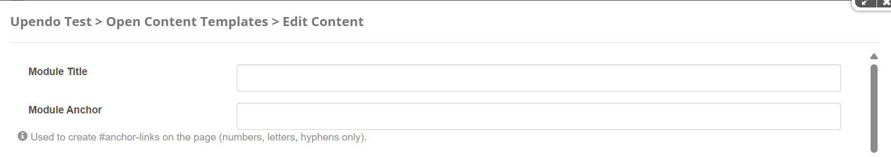
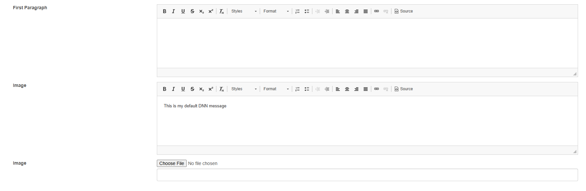
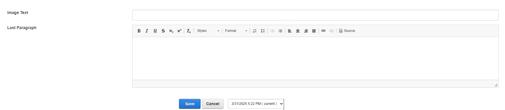
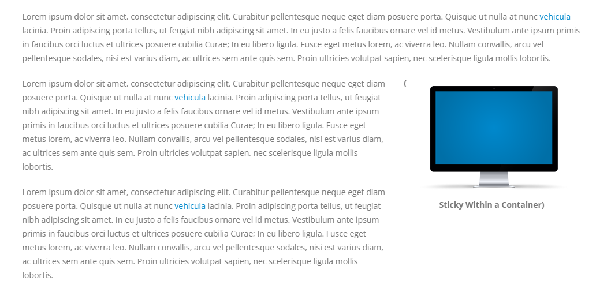

Porto-Sticky-Elements Documentation
Table of Contents
Overview
The Porto-Sticky Elements component allows you to keep images fixed on the screen while users scroll through the page. This feature is useful for highlighting visual elements without them disappearing when scrolling. Porto defines the appearance and behavior, while its implementation is managed through OpenContent, providing flexibility in configuration.
For more details, check out the Porto-Sticky-Elements repository on GitHub or the Porto documentation.
Usage Example
Edit
  Properties
| Field Name | Type | Description | Required |
|---|---|---|---|
| Module Title | String | Used to define the title of the module. This title is displayed in the DNN administration interface to help identify the module. | No |
| Module Anchor | String | Used to create anchor links on the page. This allows users to link directly to the module using a unique identifier. Only letters, numbers, and hyphens are allowed. | No |
| First Paragraph | Text | The first paragraph content, editable via CKEditor. | No |
| Content | Text | The main content, editable via CKEditor. | No |
| Image | Image | The image displayed in the sticky element. | No |
| ImageText | Text | The text associated with the image. | No |
| LastParagraph | Text | The last paragraph content, editable via CKEditor. | No |
Views
Notes
Note: When using the Porto-Sticky-Elements component, ensure the following considerations are met for proper functionality:
- Ensure all fields are configured correctly to display the desired content on your website.
- Select an image with an appropriate resolution to ensure it displays correctly and maintains quality.
- Verify that the sticky functionality is working as expected, especially on smaller screen sizes.
- Use valid URLs for any links or images to avoid broken elements on the page.
- Test the layout and design across different devices and browsers to ensure compatibility.
- Ensure that the text content is concise and aligns with the overall design of your website.
Proper configuration and testing will help ensure that the Porto-Sticky-Elements component integrates seamlessly into your website.